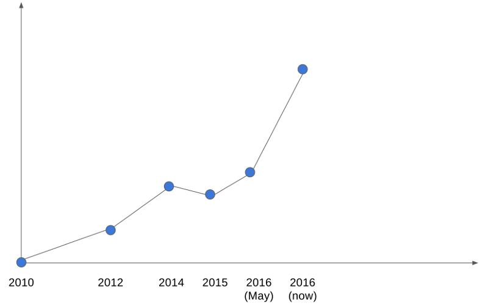
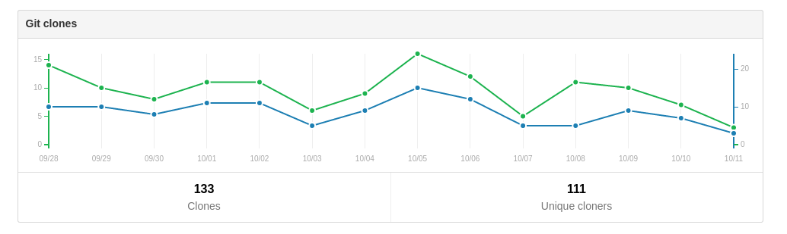

Open Source, and How I Got Here
Jethro Kuan
Created: 2016-10-15 Sat 18:08
Slides
whoami
- NUS CS (Y1)
- Emacs SG Host
- CSW, Flezio
- @jethrokuan
coding != programming
Pay attention in school!
- We engineers solve hard problems
- \(N_{problems} < N_{engineers}\)
- Being able to program distinguishes you
\(coding \cap programming \ne \phi\)
- Algo?
- Heuristics?
- Complexity?
- Large Scale?

Other things I've built in 2016

How I got into Open Source
- Developer Productivity
- Personal Productivity

Fisherman

What's the usage like?
z
- \(\approx\) 1200 unique users

fzf
- \(\approx\) 1000 unique users
What's it like maintaining my work?
- \(\approx\) 2 Github issues per month per repo
- Occasional bug reports, feature requests
What I've learned
CS-wise, lots!
- Exposure to new and old ideas
- "Been there, done that"
- Community guidance
What could be done better?
Libraries vs Frameworks
Concurrency
- Mutexes
- Promises
- STM
- CSP
FP vs OOP
- Category Theory
- Lambda Calculus
x = [5]; process(x); x[0] = x[0] + 1;
Designing APIs
- Middleware/Interceptors
- Authentication
- Transit/EDN vs JSON
State Management
- Functional Reactive Programming
- Event Sourcing
Software Architecture
- DDD/CQRS
- Distributed Systems
Types
function divide(a,b) { return a / b; }
I digress…
You don't always work with the nicest people
- Oh My Fish DMCA take down
- Code superiority doesn't give you the right to diminish others
Mistakes will be made
- Think before you speak
- Always be the bigger person
What's stopping you?
- I'm not good enough
- I don't have the time
- I've no idea what to make
Where can you start?
Low-hanging fruits
- Libraries you use and love
- Devise
- React
- etc. etc.
Mentors/Idols
Read, read, read
Thank you!
Questions?